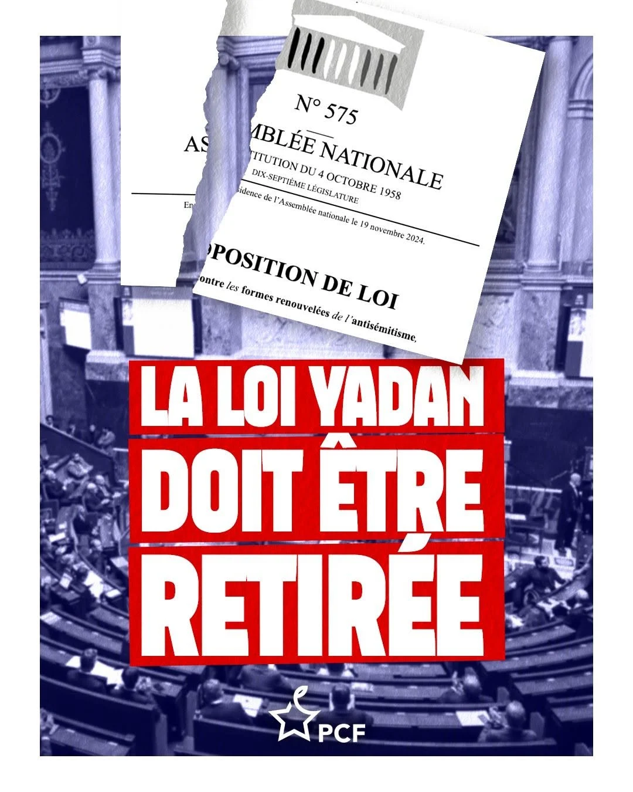

Publication relayée par le PCF 79
Le PCF demande le retrait du texte porté par Caroline Yadan
Date de mise à jour indiquée par Facebook · 8 avril 2026
Texte de la publication · PCF national
🚩 La loi portée par Caroline Yadan est une impasse : floue, dangereuse pour les libertés, et contre-productive dans la lutte contre l’antisémitisme.
Elle entretient les amalgames, fragilise le débat démocratique et peut aller jusqu’à nourrir ce qu’elle prétend combattre.
Face à la montée réelle de l’antisémitisme, nous avons besoin de clarté, de justice et de moyens, pas de confusion.
🔴 Le Parti Communiste Français le dit clairement : la loi Yadan doit être retirée.
Retrouvez le communiqué complet en commentaire.

Sources
PCF national · publication relayée par le PCF 79 · bibliothèque Facebook · AR-0002-FB-00820
À lire aussi · Face au budget d’austérité, le PCF propose un pacte d’avenir